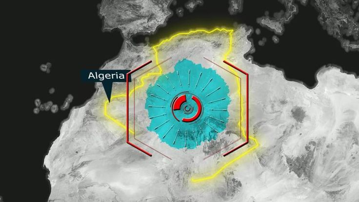

تسريب ضخم لقواعد بيانات حكومية جزائرية يكشف عن اختراق طويل الأمد

كشف فريق التحليل الجنائي الرقمي في وحدة الرصد عن اختراق استمر 14 شهراً على الأقل في قواعد بيانات عدة وزارات حكومية جزائرية، أسفر عن تسريب ملايين السجلات الحساسة بما في ذلك بيانات شخصية لموظفين حكوميين ومرشحين وظيفيين.
الاختراق الذي تم اكتشافه بالصدفة في 14 يونيو 2025 خلال فحص روتيني لبعض الخوادم، يُعد من أكبر العمليات المُرصودة ضد بنية تحتية حكومية عربية خلال العام الحالي.
نطاق الاختراق
كشفت التحقيقات الأولية أن الاختراق شمل:
- وزارة الداخلية: قاعدة بيانات تضم نحو 2.3 مليون سجل شخصي شامل الاسم والعنوان ورقم الهاتف الوطني
- وزارة التعليم العالي: سجلات أكاديمية لنحو 800,000 طالب وملفات التسجيل والدرجات
- وزارة المالية: بيانات مالية حساسة تتعلق بالميزانيات والمشتريات الحكومية
- المنظمة الوطنية للإحصاء: بيانات إحصائية حكومية شاملة غير منشورة
الأكثر إثارة للقلق ليس حجم التسريب نفسه، بل المدة الزمنية التي استمر فيها الاختراق دون اكتشاف — 14 شهراً كاملة. هذا يشير إلى مستوى عالٍ من الاحترافية وإمكانية وجود جهة داخلية تسهّلت بشكل مقصود أو غير مقصود.
كشف التحليل التقني أن المهاجمين استخدموا بوابة ويب مُصابة بثغرة رفع ملفات كنقطة دخول أولية، ثم انتقلوا أفقياً عبر الشبكة الداخلية مستخدمين بيانات اعتماد مسروقة من خدمة Active Directory. كما تم تثبيت مخزن مؤقت مشفر على خادم بريد داخلي لتجميع البيانات المسربة قبل نقلها تدريجياً عبر قنوات مشفرة.
التحليل الأولي للبنية التحتية للهجوم يُشير إلى ارتباط محتمل بمجموعة APT-C-36 المعروفة باستهدافها للقطاع الحكومي في شمال أفريقيا، لكن هذا التقييم لا يزال أولياً ويخضع للمراجعة.
تم إخطار الجهات الجزائرية المعنية بشكل عاجل مع توفير حزمة مؤشرات الاختراق الكاملة لتمكين عمليات الاحتواء والتنقية.